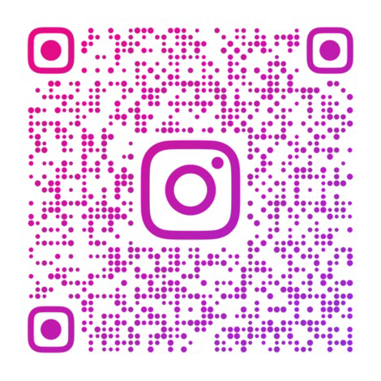
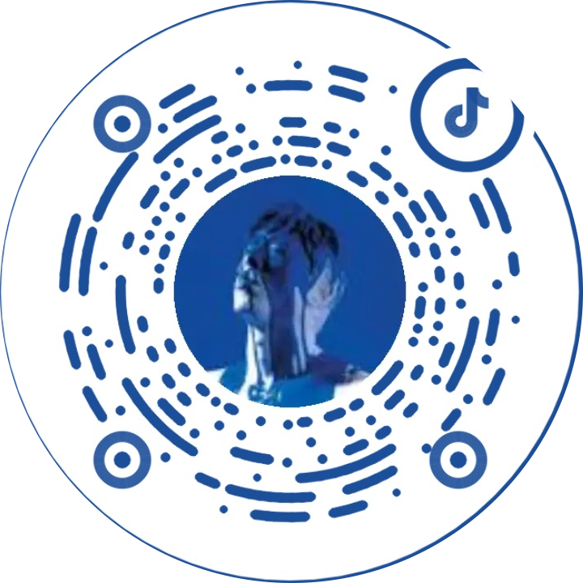

嵌入式开发
以 ESP32 为主，围绕 BLE/A2DP、嵌入式控制与原型功能验证。
HARDWARE · EMBEDDED · ENGINEERING PORTFOLIO
我是罗宇伦，湖南农业大学卓越工程师学院本科生。当前重点方向是硬件开发、嵌入式系统、样机实现与工程验证。 长期的音乐与音频实践，也让我在延迟、底噪、动态响应和交互体验上保持更敏锐的感知。
学生工程实践者 · 音频产品探索者 · Desk Park 乐队吉他手

PCB 设计、板级验证、硬件调试与系统联调。
长期乐队演出与音频设备实践，让我能从真实使用场景理解音频产品。
ABOUT
以 ESP32 为主，围绕 BLE/A2DP、嵌入式控制与原型功能验证。
PCB 设计、样机组装、硬件调试、功能测试与系统联调。
能够在学生项目中承担负责人角色，推进分工、验证与展示落地。
结合竞品调研、用户场景分析、多端交互与产品验证推进方案。
CURRENT EXPERIENCE
HARDWARE & MARKET RESEARCH
围绕音视频产品与智能硬件开展技术和市场调研，把应用场景、硬件参数、技术方案与产品定位放进同一套分析框架。
FEATURED PROJECTS
PRODUCT & ENTREPRENEURSHIP PHILOSOPHY
PRODUCT PHILOSOPHY
我更关心产品是否真正改善了使用体验，而不是参数是否足够夸张。对初创团队而言，很多机会并不来自重新发明底层技术，而来自把成熟技术重新组合，用新的交互和结构去解决被忽略的具体场景。
ENTREPRENEURSHIP
我不把商业落地和技术理想看成冲突关系。早期团队资源有限，应该先做技术门槛可控、供应链成熟、用户明确的产品，获得现金流、制造经验和市场认知，再把这些积累投入更长期、更困难的技术方向。
MUSIC · SECONDARY

我长期进行乐队排练与现场演出，熟悉电吉他、效果器、监听系统和 DAW 工作流。这些实践也持续反哺我对音频产品、设备交互和真实使用体验的理解。
通过音响展调研，我开始更系统地思考音频产品、技术融合和真实使用场景。


CONTACT
也可以查看我的 GitHub、简历与两个项目的完整介绍。
欢迎交流硬件、音频产品和早期项目实践。
L3092105572@gmail.com
SOCIAL
更多联系方式与社交媒体。
微信
微信号：Roylyl06
Instagram
用户 ID：ROYLYL06

抖音
@Roylyl · 抖音号：luoyulun

WhatsApp
+86 152 0021 0938